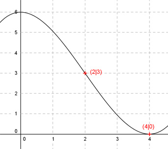

Aufgabe 42 Der Graph einer ganzrationalen Funktion 3. Grades berührt die x-Achse an der Stelle x = 4 und hat bei (2|3) einen Wendepunkt. Wie lautet seine Funktionsgleichung?  Allgemeine Form einer ganzrationalen Funktion 3. Grades: f(x) = ax3 + bx2 + cx + d f’(x) = 3ax2 + 2bx + c f’’(x) = 6ax + 2b 4 Bedingungen: 1. Berührt die x-Achse an der Stelle x = 4 bedeutet zum einen: f(4) = 0 --> a * 43 + b * 42 + c * 4 + d = 0 --> 64a + 16b + 4c + d = 0 I 2. Berührt die x-Achse an der Stelle x = 4 bedeutet zum anderen: f’(4) = 0 --> 3a * 42 + 2b * 4 + c = 0 --> 48a + 8b + c = 0 II 3. Hat bei (2|3) einen Wendepunkt bedeutet zum einen: f(2) = 3 --> a * 23 + b * 22 + c * 2 + d = 3 --> 8a + 4b + 2c + d = 3 III 4. Hat bei (2|3) einen Wendepunkt bedeutet zum anderen: f’’(2) = 0 --> 6a * 2 + 2b = 0 --> 12a + 2b = 0 IV I + III * (-1) 64a + 16b + 4c + d = 0 -8a - 4b - 2c - d = -3 ------------------------ 56a + 12b + 2c = -3 V II * (-2) + V -96a - 16b - 2c = 0 56a + 12b + 2c = -3 --------------------- -40a - 4b = -3 VI JV * 2 * VI 24a + 4b = 0 -40a - 4b = -3 ---------------- -16a = -3 |: (-16) a = 0,1875 a = 0,1875 in IV eingesetzt: 12 * 0,1875 + 2b = 0 2,25 + 2b = 0 |-2,25 2b = -2,25 |:2 b = -1,125 a = 0,1875 und b = -1,125 in II eingesetzt: 48 * 0,1875 + 8 * (-1,125) + c = 0 9 - 9 + c = 0 c = 0 a = 0,1875 und b = -1,125 und c = 0 in III eingesetzt: 8 * 0,1875 + 4 * (-1,125) + d = 3 1,5 - 4,5 + d = 3 -3 + d = 3 |+3 d = 6 Gesuchte Funktionsgleichung: f(x) = 0,1875x3 - 1,125x2 + 6